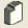

Sistema de ventanas
El sistema trabaja utilizando ventanas múltiples que se manejan internamente como documentos hijos de la ventana principal, usted puede tener tantas ventanas hijas abiertas al mismo tiempo como considere necesario, la única restricción es que no puede abrir dos veces una ventana con el mismo contenido, por ejemplo el registro de un mismo alumno, de un mismo grupo, etc. En el menú Ventana puede ver que ventanas tiene abiertas en un momento dado y haciendo click sobre una opción puede traer al frente la ventana para localizar más rápido información o registros.
Conexión al servidor
Para que el sistema pueda funcionar debe establecer correctamente la conexión al servidor MySQL Para saber si el sistema está conectado al servidor verifique el icono de estado de conexión en la parte inferior derecha de la ventana (junto al reloj) si hay conexión el icono muestra una flecha verde en caso de que no haya conexión establecida el icono muestra una flecha roja
Para establecer la conexión al servidor:
- Haga click en el menú: Sistema
- Haga click en el submenú: Conexión al servidor
(También puede hacer click directamente en el icono de estado de conexión) - Ingrese los parámetros solicitados en la ventana: Conexión al servidor
A) Debe ingresar la dirección IP de la maquina en la cual corre el servidor MySQL, en caso de que sea la misma máquina en la que está ejecutando el sistema debe seleccionar la opción Esta máquina es el servidor
*B) Debe ingresar el puerto de escucha del servidor, por default dicho puerto es el 3306, solo debe cambiarlo si el servidor MySQL ha sido configurado con un numero de puerto diferente.
*C) Debe ingresar el nombre de usuario con acceso al servidor MySQL y con permisos de uso de la base de datos que utiliza el sistema.
*D) Debe ingresar el password correspondiente al usuario indicado en el paso anterior.
E) Una vez indicados los parámetros haga click en el botón Conectar Si la conexión se estable con éxito y desea que el sistema recuerde los parámetros para que se conecte automáticamente cada vez que se inicie de click en el botón Guardar parámetros.
* Si tiene dudas o desconoce alguno de estos parámetros consulte al administrador del servidor de base de datos.
Seguridad
Se recomienda que considere debidamente la configuración que desea establecer para obtener el grado adecuado de seguridad de los datos que maneja a través del sistema, para esto, el sistema provee de un manejo de seguridad basado en la restricción de acciones, esto es, usted puede proteger por medio de un password de seguridad las acciones que considere necesario, debe tener en cuenta que esto se hace a nivel sistema y el password no está asociado a ninguna clase de usuario.
Para cambiar el password de seguridad
- Haga click en el menú: Sistema
- Haga click en el submenú: Seguridad
- En la ventana Seguridad en el campo Password actual ingrese el password actual
(Si desconoce el password actual consulte al administrador del servidor de base de datos.) - En el campo Nuevo password introduzca en nuevo password
- En el campo Confirmar vuelva a introducir en nuevo password
- Haga click en el botón Guardar
- Haga click en el menú: Sistema
- Haga click en el submenú: Seguridad
- Elija las acciones que desea proteger con el password de seguridad
Creación de nuevos registros Opción que engloba todas las acciones para crear nuevos registros, sean estos de alumno, grupos, sesiones de un calendario, sesiones de asesorías, o registros de cualquier categoría creados por vez primera.
Modificación de registros Opción que engloba todas las acciones de modificación de datos de registros, sean estos de alumno, grupos, sesiones de un calendario, sesiones de asesorías, o registros de cualquier categoría existentes y que se desea actualizar.
Búsqueda y visualización de datos Opción que engloba todas las acciones de búsqueda y visualización de datos de registros, sean estos de alumno, grupos, sesiones de un calendario, sesiones de asesorías, o registros de cualquier categoría existentes y que se desea consultar.
Eliminación de datos Opción que engloba todas las acciones de eliminación de datos de registros, sean estos de alumno, grupos, sesiones de un calendario, sesiones de asesorías, o registros de cualquier categoría existentes y que se desea eliminar.
- Haga click en el botón Guardar
En la configuración de la imagen las acciones Crear, Modificar y Eliminar están seleccionadas por lo cual solo usuarios que conozcan el password de seguridad pueden llevarlas a cabo mientras que cualquier otro usuario podría ver y consultar los datos de cualquier registro.
Datos del docente
Para que todas las opciones del sistema puedan ser accesibles es necesario que proporcione datos de la institución y escuela en que labora así como datos del docente, tales como nombre, titulo, lista de materias impartidas y calificación mínima aprobatoria para cada materia. Esto es necesario para poder crear en forma completa los registros de los grupos y para ser utilizados en los reportes.
Para establecer los datos del docente
- Haga click en el menú Sistema
- Haga click en el submenú Datos del docente
- Ingrese los datos generales:
Institución educativa, Unidad académica o escuela, Área o Programa, Nombre y Titulo profesional del docente - Por cada materia que imparta:
- Haga click en el botón Agregar nueva materia 
(En la sección Materias que imparte aparecerá una nueva pestaña) - Introduzca el nombre de la materia que desea agregar
- Introduzca la clave de la materia que desea agregar
(La clave debe estar formada por tres caracteres cualquiera, no debe ser igual a ninguna clave previa, y se recomienda que sea lo más alusiva posible al nombre de la materia) - Introduzca el valor de la calificación mínima aprobatoria
- Puede crear el temario a cubrir por esta materia, haga click en el botón
Crear nueva versión por cada tema del temario haga click en el botón
Agregar en la tabla de temas ingrese el numero, titulo y opcionalmente el contenido del tema
(puede definir o editar el temario en cualquier momento posterior) - Haga click en el botón Guardar

- Si en algún momento desea eliminar una materia de la lista haga click en el botón
Quitar una materia

Se le pedirá la clave de la materia que desea eliminar
(debe tener presente que si elimina materias relacionadas con el registro de algún grupo, vigente o no, puede crear inconsistencia en los datos)
Horario semanal
El sistema proporciona una ventana en la cual puede ver el horario semanal vigente al momento de consultarla. El horario se muestra en forma tabular y se compone por: los horarios de sesiones para un grupo, los horarios de sesiones para asesorías a tesistas y horarios para otras actividades. Los horarios para sesiones de grupos y asesorías a tesistas deben ser agregados desde la ventada de Calendario de grupo y Asesorías respectivamente. Para otras actividades debe agregar los horarios desde esta ventana
Para agregar horarios de otras actividades:
- Haga click en el menú Sistema
- Haga click en el submenú Horario semanal vigente
(se cargara automáticamente horarios de sesiones y asesorías vigentes) - Haga click en el botón agregar:
Aparecerá un dialogo, indique el día de la semana y hora inicial y final de la actividad
haga click en el botón Crear aparecerá un dialogo, indique la actividad y haga click en Aceptar. - Una actividad creada de esta forma siempre se considerara vigente
- Cuando esta actividad no sea vigente podrá quitarla haciendo click sobre ella y eligiendo quitar
(no se recomienda quitar sesiones para grupo o asesorías a tesistas, éstas al dejar de ser vigentes no se cargaran) - Puede imprimir el horario haciendo click en el botón Imprimir horario

Reportes de materia
Puede crear reportes gráficos de estadísticas de una materia. El sistema puede generar dos tipos de reportes en base a los datos acumulados de todos los alumnos que han cursado alguna materia.
Para generar los reportes:
- Haga click en el menú Reportes
- Haga click en el submenú Por materia
- En la ventana Reportes de materia indique la clave de la materia haga click en Cargar.
- Si hay datos de alumnos que hayan cursado la materia se generaran los siguientes dos reportes
- Porcentaje de calificaciones obtenidas en esta materia
Muestra el porcentaje de alumnos (sobre el total que han cursado la materia)
que han sacado determinada calificación en base a rangos desde 7 hasta 10 con intervalos de 0.5 - Porcentaje de aprobación de alumnos
Muestra el porcentaje de alumnos (sobre el total que han cursado la materia)
que han aprobado, reprobado o repetido esta materia
Avisos del sistema
El sistema pose una ventana de avisos tipo recordatorios que puede ser configurada para que automáticamente muestre avisos de próximas sesiones programadas (sesiones de asesorías o clases a un grupo), para ver como configurar esta ventana pase a la siguiente sección Preferencias Si habilita esta opción los avisos se muestran automáticamente al iniciar el sistema o pueden ser llamados en cualquier momento haciendo click en el botón Avisos del sistema que se encuentra en la esquina inferior derecha cerca del reloj.
Dentro de la ventana de avisos los recordatorios se muestran en una lista ordenada por fecha, puede hacer click en un aviso para abrir el registro correspondiente y ver más detalles.
Errores inesperados
El sistema pose varios métodos para detectar errores en tiempo de ejecución, como por ejemplo validar los datos ingresados en los formularios, detectar si falla una operación al enviar o recibir datos del servidor, aun así en ocasiones pueden surgir errores (conocidos como bugs) inesperados. El sistema al detectar uno de estos errores ofrece la opción de crear un archivo con el informe del error ocurrido, el informe no recoge datos o información del equipo ni de la base de datos, únicamente los datos técnicos relativos al error ocurrido. Si desea ayudar a mejorar el desempeño del sistema, en caso de que surja un bug, puede crear el archivo de informe y enviarlo a la dirección de correo electrónico que aparece en la ventana Acerca de.
Preferencias
En menú Sistema submenú Preferencias puede cambiar la apariencia del sistema, Metal (default) o sistema operativo, así como configurar si desea que el sistema despliegue automáticamente la ventana de avisos al iniciar, que tipo de recordatorios desea ver y el alcance en días próximos que desea abarcar, por ultimo también puede indicar un archivo de imagen para utilizar como logo al imprimir reportes.